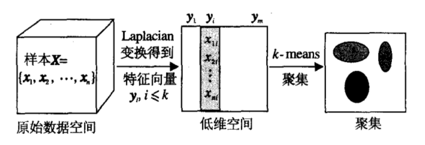

二进制数据构成的离散空间及其转换关系
Written by Patrick in 数据分析 on 六 17 十月 2015.
对于网络二进制数据，我们常以不同的单位进行划分统计。最细粒度的是以比特为单位，二进制数据集在${0,1}^{2^n}$离散空间中分布，其中$n$为二进制数据的比特个数。当以字节为单位进行统计时，二进制数据集在${i,i\in{0,1,2,\dots,255}}^{2^(n/8)}$的离散空间中分布。其它以不同粒度进行统计，情况类似。
要对不同协议的原始二进制数据进行聚类、分类，一个前提假设就是这些数据在离散空间中的分布不是随机均匀散布的，如果是随机均匀散布，则数据集不具备可识别特征，现在的研究就是要先证实这个假设前提，然后进行识别分析。因此，对协议的二进制数据进行聚类分析就是为了验证在某一离散空间中不同协议数据是否具有团簇特征。
而二进制数据在以不同基底构成的离散空间之间存在着转换关系，以比特和字节为单位的离散空间为例，以字节为单位的离散空间是将以比特为单位的离散空间，按8比特，或认为是8个维度构成的一个子空间进行压缩映射：
$$f:\mathcal {0,1}^8\rightarrow{i,i ...
聚类，模糊聚类及其有效性
Written by Patrick in 机器学习 on 三 14 十月 2015.
1. 聚类问题
如果我们把聚类问题描述为在一堆数据中寻找一种“自然分组”，那么我们就必须定义“自然分组”的含义。从什么意义上，我们能够说同一类中的样本比来自不同类的样本更为相似？这个问题实际上涉及两个独立的子问题：
- 怎样度量样本之间的相似性？
- 怎样衡量对样本集的一种划分的好坏？
1) 相似性度量
一种直观的做法是将样本集映射或定义到一个度量空间中，通过距离来衡量样本之间的相似性，常用的欧几里德距离便是其一，样本集在欧几里德空间中进行度量。但这个广泛使用的度量方法存在以下需要注意的问题：
-
如果特征空间是各向同性的并且数据大致均匀分布在各个方向上，使用欧几里德距离是合理的。但对高维稀疏、各向不均衡的数据，这种度量方式就会存在问题。
-
规范化是实现不变性的一种方法。选用欧几里德距离得到的聚类结果将不会因特征空间的平移和旋转而改变，所以数据点作刚体运动不会影响分类结果。但一般地说，对线性变换或其他会扭曲距离关系的变换是不能保证的。要实现位移和缩放的不变性，可以通过平移和缩放坐标轴使新样本集具有零均值和单位方差；要实现旋转不变性，可以旋转坐标轴使这些轴与样本协方差矩阵的特征向量平行，即主成分变换。
-
但不能说规范化一定是必要的。通过平移和缩放使得均值为0,方差为1的规范化方法，其出发点是有效防止某些特征仅仅因为它的数值过大而主导(dominate)距离度量。对于服从正态波动的数据进行规范化操作是合理的，但如果数据的波动是因为存在多个子类，那么规范化就不合理了，因为这将改变样本数据类内和类间在原始空间中的分布，影响分类结果的正确性。 因此，对于聚类算法，一般不对原始样本集进行规范化处理？
几类常用相似性度量方法：
- Minkowski度量 ...
聚类研究随笔-1005
Written by Patrick in 机器学习 on 一 05 十月 2015.
1.聚类有效性问题
聚类算法是一种无监督的学习算法，实现对各定数据的结构一无所知，无论用什么算法聚类，其聚类结果的合理性都有待评价。一些算法只能保证收敛到目标函数的局部极值，不用的聚类数和初值就可能得到不同聚类结果，如何评价不同的聚类结果，是聚类有效问题。
Bezdek在1974年提出了聚类有效性函数$V_{pc}(u,c)$，也称为划分系数(Partition Coefficient)，是第一个实用的聚类有效性标准，定义如下：
$$ V_{pc}(u,c)=(1/n)*\sum_{k=1}^{n}\sum_{i=1}^{c}u_{ik}^{2} $$
Bezdek指出可以以上式作为聚类有效性函数，即
$$ \exists{u^,c^}, V_{pc}(u^,c^)=\max_{2\le c ...
谱聚类广义模型与典型算法
Written by Patrick in 机器学习 on 三 30 九月 2015.
本文为《谱聚类广义模型与典型算法分析》（《模式识别与人工智能》2014年11月第27卷第11期）的文献阅读笔记。
谱聚类方法基于点对相似性度量，避免了原型方法的数据凸分布要求，但当图规模较大时，求解特征向量较为困难。此外，谱聚类通过Laplace算子构造数据的非线性低维嵌入，形成可聚类的区域，然而全局的相似性度量易忽略局部差异和多尺度性，在NJW算法、Ncut算法的分割结果中常造成一些局部区域不能分辨的现象，虽然有一些基于局部度量的谱聚类算法，但是他们并没有经过严格的数学论证。
谱聚类方法使用核函数（可进行非线性映射）计算样本点之间的Gram矩阵（即度量矩阵，将样本从数据空间映射到度量空间中），然后对Gram矩阵进行Laplacian变换（为什么是拉普拉斯变化)，计算标准化Laplace矩阵L的特征值和特征向量（为什么要这么做）。将索引的特征值降序排列，前若干个最大特征值对应的特征向量构成数据的低维空间，数据在这些特征向量上的投影构成低维嵌入，如下图所示。

1.1 谱聚类与核k-means之间的关系
k-means的极小化问题可转化为迹最大化问题，核k-means的松弛问题的解可通过核PCA的特征值得到，而通过求解前K个特征值在进行聚类即为谱聚类过程。具体推演过程见Kernel K-means and Spectral Clustering。
1.2 谱聚类与权重核k-means
Dhillon为每个数据点分配一个适当的权重，提出一种权重核k-means算法，并证明其与谱聚类算法的等价性，详见Weighted ...
聚类研究随笔-0929
Written by Patrick in 机器学习 on 二 29 九月 2015.
现在的问题研究路径是：
1.如何对混杂多种协议的网络数据在类别数未知的条件下进行聚类？
目前正在验证USCAWM算法计算最佳聚类数的准确率，USCAWM算法在理论上有严格的证明，在小规模的测试数据集IRIS上验证结果基本正确。但该算法中有两个至关重要的参数，一个是相似度矩阵R(Vi,Vj)，一个是相似性判别阈值，其中R(Vi,Vj)是计算最佳聚类数的关键，当聚类数确定后，各种聚类算法都可做聚类分析，而不一定要像USCAWM算法中那样不断迭代选择最佳阈值。
那么，相似度矩阵的计算实际上涉及的是相似性度量的问题。f: V×V->R这个相似性度量函数f()将原始的样本空间映射为一个有助于聚类的度量空间，这里要注意两点：
a. 原始样本空间的非线性分布会给采用线性划分的聚类方法带来困难。一般的解决方法是使非线性空间线性化，如采用核函数，或选取能够进行线性划分的维度。所以，从本质上讲，如果能够将样本空间线性化，聚类的难度将大大减小，也就是说，聚类的关键是能够找到一个将样本空间映射为线性度量空间的函数，事实上，这也是很多距离度量定义的初衷。
b. 有助于聚类的度量空间是指，类内紧凑，类间松弛。不论采用线性化映射还是降维选取线性划分的特征 ...
APP数据包初步分析
Written by Patrick in 数据分析 on 一 28 九月 2015.
应用层协议报文的特点：
- 以TCP作为传输层协议，HTTP作为应用层协议传输占很大比例，HTTP协议的载荷再封装自定义消息内容，同时也有基于XMPP自定义的通信协议;
- 一份报文，即一条TCP连接，在其载荷内容中可能包含多个消息;
- 可能存在跨流传输同一个报文的情况。
这些特点带来的问题是：
- 无法将应用层报文与消息样本一一对应，因为存在一份应用层报文包含多个自定义消息的情况;
- 消息中传输的数据内容较大，而报头较短;
[读书笔记]Python高手之路
Written by Patrick in 读书笔记 on 一 07 九月 2015.
此书中文名取得有点讨巧，原书名是Python黑客手册，但两个名字都跟书的内容没甚关系。这书主要介绍了一些比较实用的Python工程项目技巧，有很多在大型Python软件或库研发过程中使用的工具介绍。涉及文档、分发、测试、性能优化和一些编程技巧。有些东西对于现在个人的一些小规模代码可能不太用的上，有些还是值得借鉴。
1. 项目结构
图1-1给出了一个项目的标准的文件层次结构，包含文档、代码、setup.py、README.rst、requirements.txt以及代码中的测试案例和测试数据。
版本编号应该遵从正则表达式格式：N[.N]+[{a|b|c|rc}N][.postN][.devN]
2. 文档生成
采用Sphinx
3. 测试
使用unittest、mock和testscenarios模块
4. 高级技巧
用好装饰器、函数式编程和上下文管理器，可以使得代码简洁高效，可维护性好，也能使代码更专业一些。
5. 一些架构
多进程、异步和事件驱动架构
Wireshark离线安装
Written by Patrick in 软件 on 二 01 九月 2015.
Wireshark采用编译的方式安装会遇到许多依赖关系的问题，在离线环境中这么搞会很烦躁。一个简单的办法是在一台联网电脑上在线安装，然后把安装包都拷到离线电脑上，用dpkg来安装。
# 找一台联网电脑安装wireshark
$sudo apt-get install wireshark
# wireshark的安装包会先下载到本地，对于ubuntu系统，一般放在`/var/cache/apt/archieves`
路径下。如果在联网电脑上安装没有问题，把这些deb的安装包拷贝到离线主机上，在同目录下执行
$sudo dpkg -i libc-ares2_1.10.0-2_amd64.deb libsmi2ldbl_0.4.8+dfsg2-8ubuntu2_amd64.deb
libwireshark3_1.10.6-1_amd64.deb libwireshark-data_1.10.6-1_all.deb
libwiretap3_1.10.6-1_amd64.deb libwsutil3_1.10.6-1_amd64 ...Mongodb集群部署
Written by Patrick in Mongodb on 一 31 八月 2015.
Mongodb集群搭建还是比较容易的一件事，只是操作稍显繁琐，有很多重复性劳动。由于官方没有发布集群配置工具，只能手动配置每一台服务器，为了节省时间和不必要的重复工作，这里给出一个一键操作Mongodb集群的方法和相应的脚本程序。
1. 集群环境设置
为了方便在集群多机条件下部署操作，需要为一些远程操作提供便利的系统和网络环境，例如集群机器的统一命名，ssh免登录认证，集群时统等等。假设我们要搭建一个5台机器组成的Mongodb数据库集群，我们选择Linux平台来部署集群，因为Mongodb在Linux上运行得比Windows平台上更稳定。
1.0 集群规划
当Mongodb数据库集群配置成一个分片+副本集的部署方案时，整个集群节点之间并没有主次之分，各节点完成相应角色任务即可。因此，我们给5台主机编号为mongodb-[1~5]，后续操作如无特别说明，均在mongodb-1主机上完成。
1.1 添加IP-主机名映射
向/etc/hosts文件中添加IP-主机名映射表
10.0.0.1 mongodb-1
10.0.0.2 mongodb-2 ...